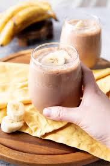

This is a recipe for what is basically a superfood yogurt. While made in th esame way as a smoothie its taste and texture more closely ressemble that of yogurt.
This recipe uses very specific ingredients. The protein powder used for example is essential for acheiving the right taste. Using a different powder will result in very subpar outcomes. The yogurt used is less important but the brand used in this example is what the creator has found to be the best.
This smoothie is also very convenient for those who need a lot of calories as well as all the necessary nutrition for a healthy life but are on a time crunch. While not as healthy as all natural foods it is much better than fast food or other time saver alternatives.
Also note that following the instructions exactly will have varying results in taste and especially texture. If the result is too thick add water and re-blend. If too watery then add a small amount of powder and re-blend. Repeat this process until you acheive the desired consistency.